Modelos de clasificación y regresión
14 gráficas didácticas basadas en los algoritmos presentes en AABD-BigData. Los datos son sintéticos, la partición de test es fija (random_state=42) y las métricas no constituyen una comparación universal entre algoritmos. En clasificación, el fondo indica clase predicha y los puntos el conjunto observado. En regresión, la línea es la predicción del modelo.
Clasificación
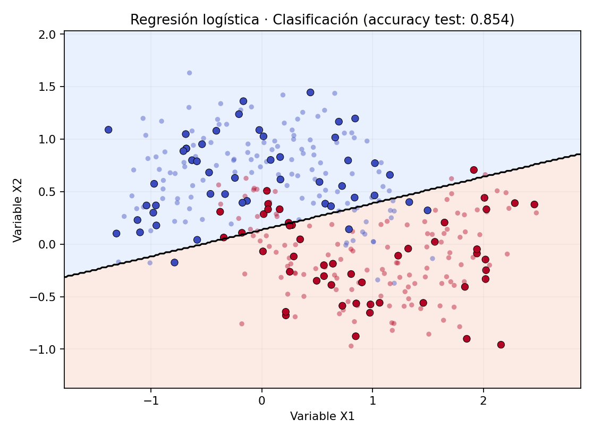
Regresión logística
Accuracy test = 0.854
Clasificador lineal; devuelve probabilidad de clase.
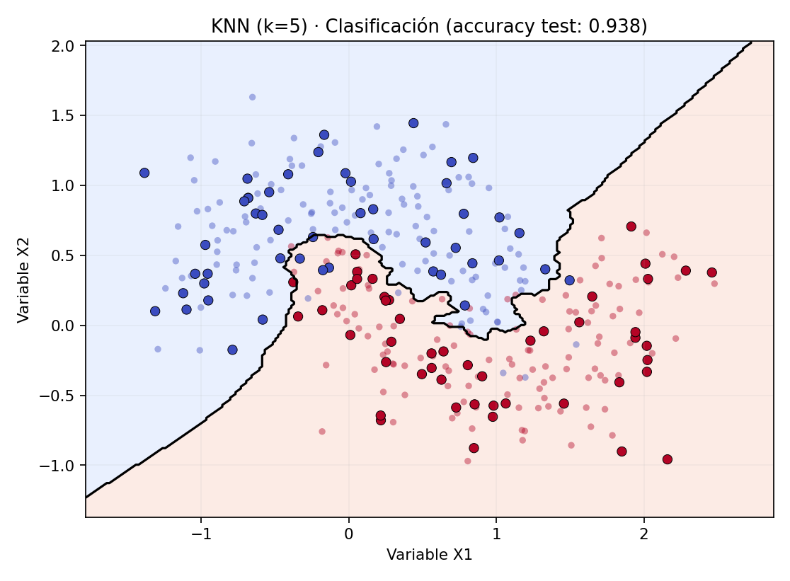
KNN (k=5)
Accuracy test = 0.938
Vota entre vecinos cercanos; frontera local.
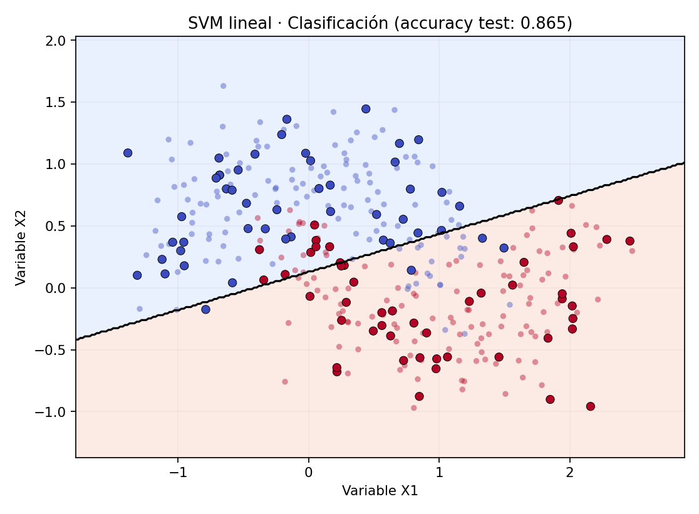
SVM lineal
Accuracy test = 0.865
Margen máximo con frontera lineal.
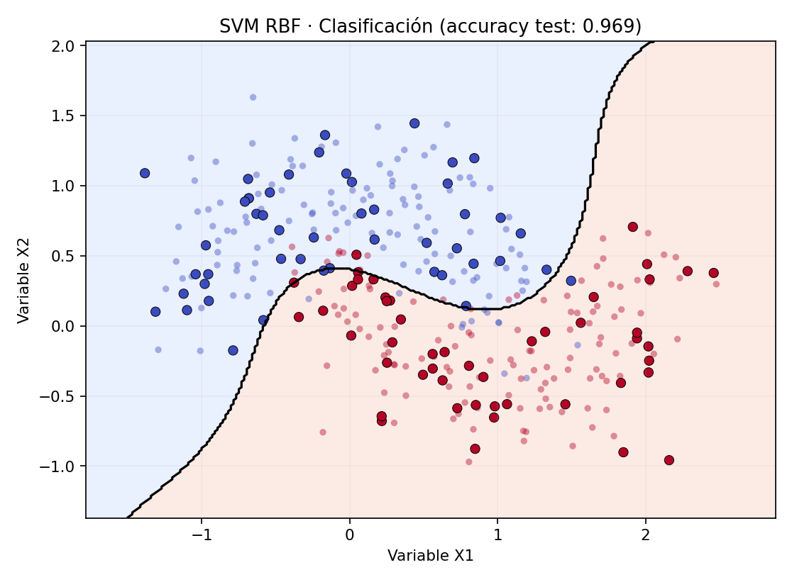
SVM RBF
Accuracy test = 0.969
Kernel no lineal; frontera curva.
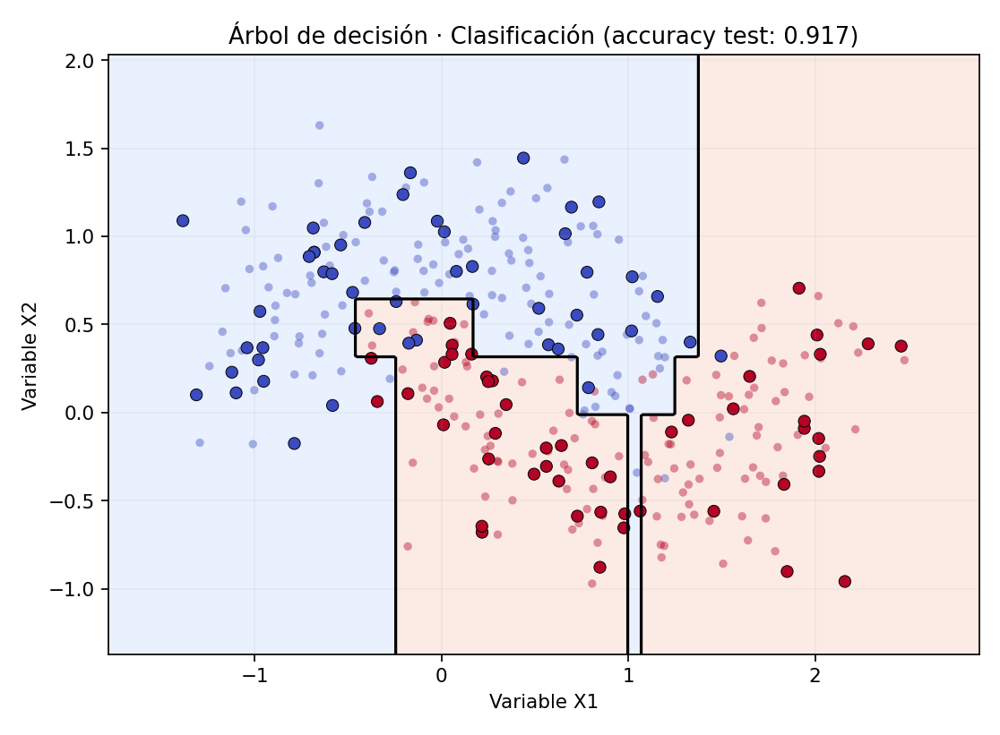
Árbol de decisión
Accuracy test = 0.917
Reglas escalonadas; susceptible a sobreajuste.
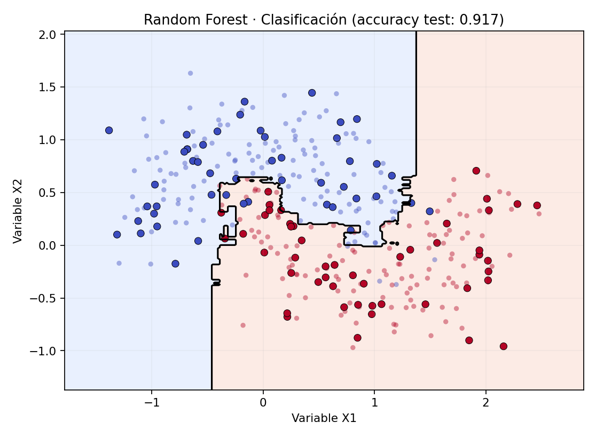
Random Forest
Accuracy test = 0.917
Promedia múltiples árboles, suaviza la variabilidad.
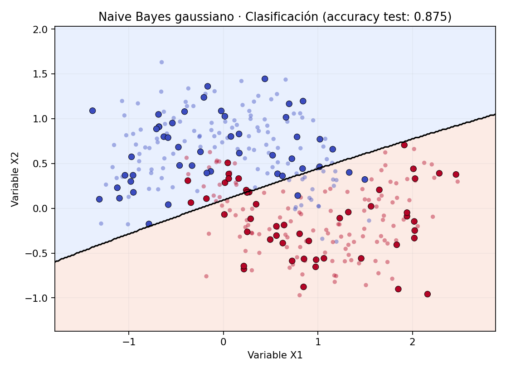
Naive Bayes gaussiano
Accuracy test = 0.875
Modelo probabilístico bajo hipótesis de independencia.
Regresión
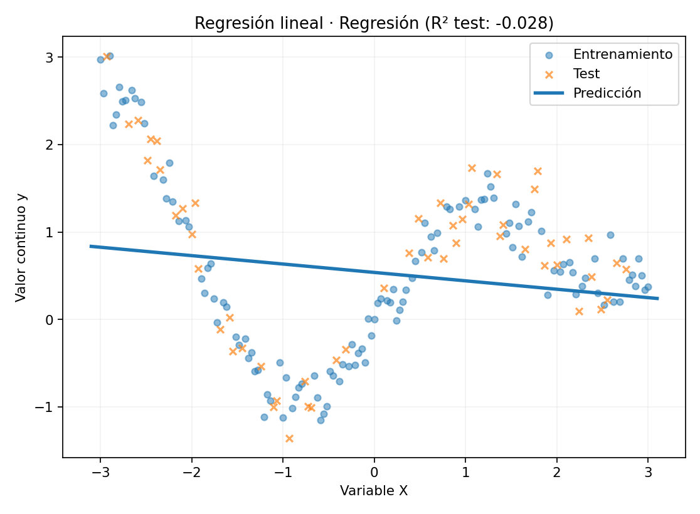
Regresión lineal
R² test = -0.028
Ajuste en línea recta; elevado sesgo si la curva es no lineal.
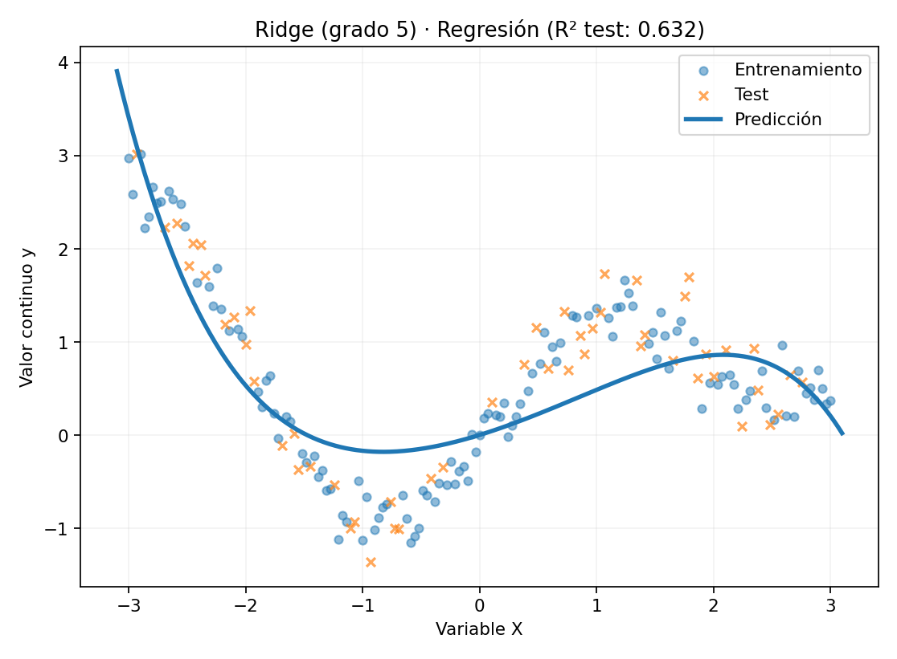
Ridge (grado 5)
R² test = 0.632
Penalización L2 para reducir coeficientes.
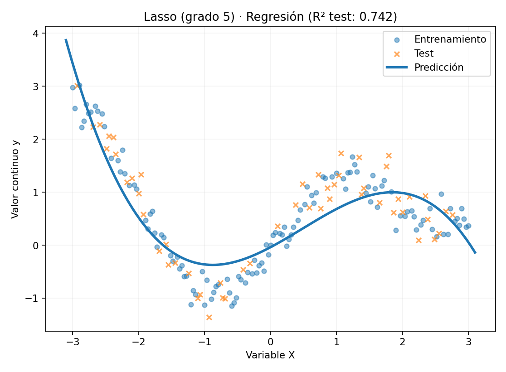
Lasso (grado 5)
R² test = 0.742
Penalización L1; puede anular coeficientes.
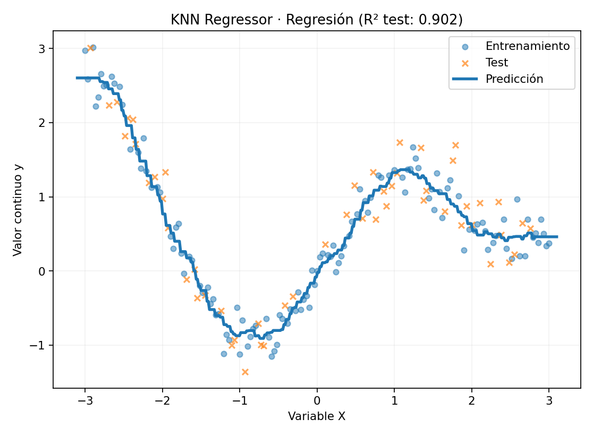
KNN Regressor
R² test = 0.902
Media de los valores de vecinos cercanos.
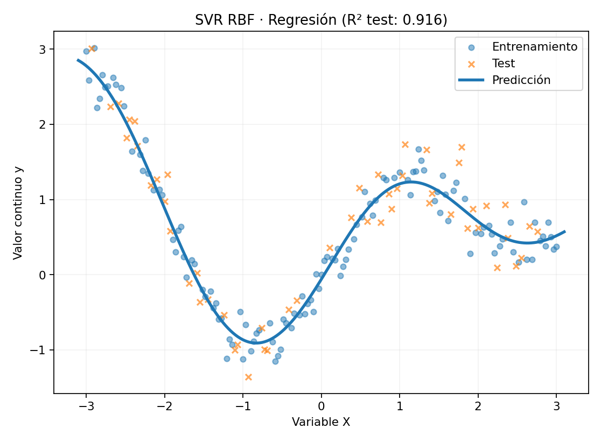
SVR RBF
R² test = 0.916
Regresión de vectores soporte con tolerancia epsilon.
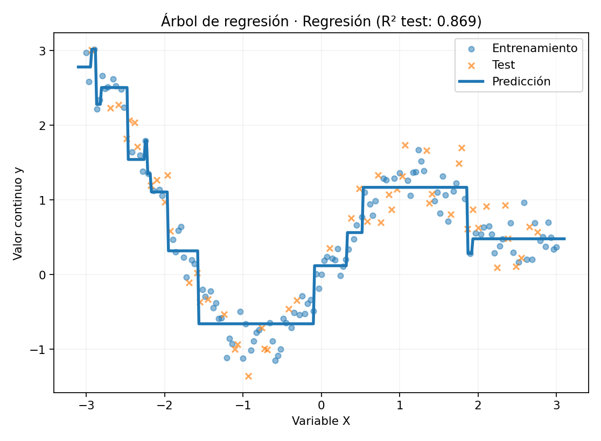
Árbol de regresión
R² test = 0.869
Predicción por tramos constantes.
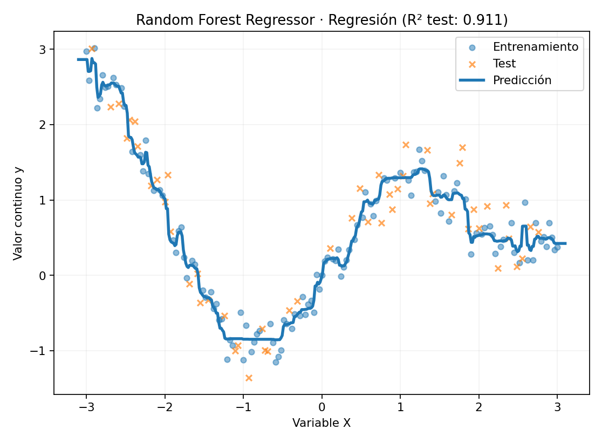
Random Forest Regressor
R² test = 0.911
Media de árboles; aproxima relaciones no lineales.
Nota: Ridge y Lasso se representan con expansión polinómica para mostrar la regularización en un problema no lineal. Naive Bayes gaussiano se usa aquí para variables continuas; MultinomialNB del material docente se destina a conteos, como palabras de texto.